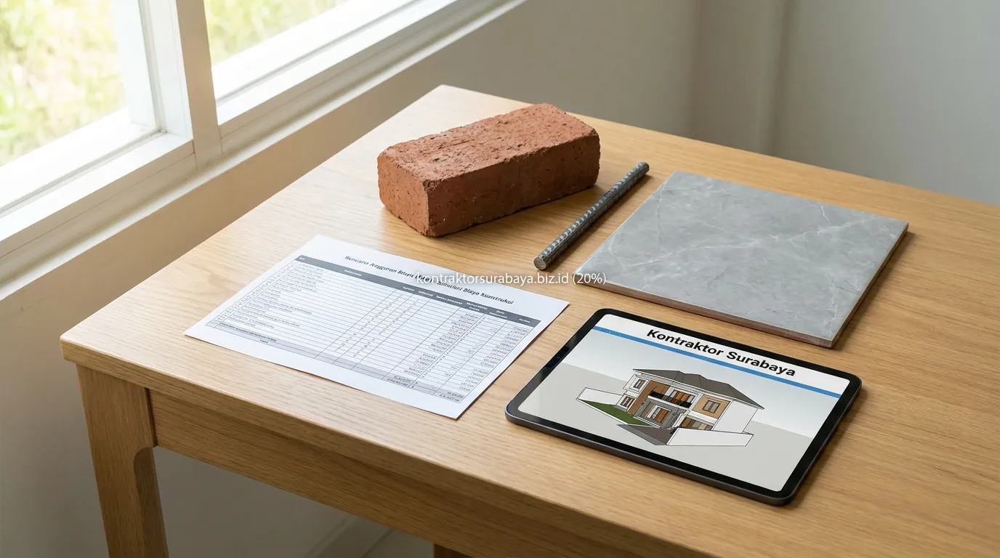

Membangun rumah impian adalah salah satu komitmen finansial terbesar dalam hidup. Sebelum melangkah lebih jauh menyewa jasa arsitek atau menghubungi kontraktor pelaksana, memiliki coretan anggaran awal sangatlah krusial agar ekspektasi desain tidak berbenturan dengan kapasitas finansial yang dimiliki.
Bagi calon pemilik rumah di area Surabaya, Sidoarjo, Gresik, hingga Mojokerto, metode paling praktis untuk mendapatkan gambaran awal adalah dengan menggunakan metode estimasi biaya per meter persegi (m²). Mari kita kupas tuntas rumus dasar, variabel harga, simulasi perhitungan, hingga batasan penggunaannya.
1. Rumus Dasar Menghitung Biaya Bangun Rumah per Meter Persegi
Metode perhitungan per meter persegi mengasumsikan biaya rata-rata seluruh elemen konstruksi—mulai dari pondasi, struktur beton bertulang, dinding, atap, instalasi MEP, hingga finishing lantai dan cat—ke dalam satu angka tarif tunggal per satuan luas lantai.
Formula Estimasi Kasar:
Total Estimasi Kasar = Luas Bangunan Efektif (m²) × Tarif Standar per m²
*Catatan: Luas bangunan efektif dihitung berdasarkan total luas lantai ruangan tertutup (indoor) ditambah koefisien area semi-terbuka (teras/balkon).Sebagai gambaran di wilayah metropolitan Gerbangkertosusila (Surabaya Raya), rata-rata tarif standar biaya konstruksi rumah tinggal per tahun 2026 terbagi dalam beberapa tingkatan kelas:
- Kelas Standar / Sederhana: Rp 3.500.000 – Rp 4.500.000 / m² (Keramik 40×40 atau 50×50, genteng beton/metal, kusen aluminium standar, cat standar).
- Kelas Menengah (Modern Minimalis): Rp 4.800.000 – Rp 6.200.000 / m² (Granite tile 60×60, kusen aluminium powder coating tebal, sanitari Toto/American Standard, atap spandek lapis peredam/genteng keramik, rangka atap baja ringan bersertifikat SNI).
- Kelas Mewah / Premium: Rp 6.500.000 – Rp 10.000.000+ / m² (Granite tile big slab / marmer alam impor, sanitary premium pintar, fasad secondary skin laser cut, plafond gypsum drop ceiling berpencahayaan indirect LED, struktur bertingkat bentang lebar).
2. Faktor yang Memengaruhi Harga per Meter Persegi Bangunan
Mengapa tarif per meter persegi antar rumah bisa terpaut jauh meski luas lahannya sama? Berikut faktor kunci yang menjadi penentu harga:
1. Spesifikasi Material Finishing
Pilihan penutup lantai (keramik vs granit tile vs marmer), jenis kusen, merek cat eksterior weatherproof, hingga sanitari kamar mandi menyumbang 35–45% dari total biaya pembangunan.
2. Jumlah Lantai & Beban Struktur
Rumah 2 atau 3 lantai membutuhkan pondasi tapak (footplat)/strauss pile, plat dak cor beton bertulang K-250/K-300, serta kolom balok berdimensi lebih besar yang meningkatkan biaya struktur dasar.
3. Tingkat Kerumitan Arsitektur
Bentuk atap limasan dengan banyak jurai, fasad kisi-kisi lengkung, void plafon tinggi (double volume), serta bukaan kaca ekstra besar membutuhkan presisi tukang dan biaya pengerjaan lebih tinggi.
4. Lokasi & Aksesibilitas Lahan
Lokasi tanah di dalam gang sempit yang tidak bisa dimasuki truk mixer molen (ready-mix) atau dump truck material memerlukan biaya langsir manual tambahan yang memengaruhi harga akhir.

3. Contoh Simulasi Perhitungan Kasar Biaya Bangun Rumah
Mari kita simulasikan dua skenario pembangunan rumah di kawasan perkotaan:
Skenario A: Rumah 1 Lantai Tipe 60 (Spesifikasi Menengah)
Rencana pembangunan rumah minimalis modern 1 lantai dengan luas bangunan 60 m² menggunakan spesifikasi menengah (granit tile 60×60, kusen aluminium, sanitari standar menengah):
- Luas Bangunan: 60 m²
- Tarif Spesifikasi Menengah: Rp 5.000.000 / m²
- Estimasi Kasar Fisik: 60 m² × Rp 5.000.000 = Rp 300.000.000
- Dana Cadangan Tak Terduga (10%): Rp 30.000.000
- Total Anggaran Awal yang Disiapkan: Rp 330.000.000
Skenario B: Rumah 2 Lantai Tipe 150 (Spesifikasi Semi Mewah)
Rencana pembangunan rumah 2 lantai (Lantai 1 = 80 m², Lantai 2 = 70 m², Total Luas = 150 m²) berkonsep modern tropis:
- Total Luas Lantai 1 & 2: 150 m²
- Tarif Spesifikasi Semi Mewah: Rp 6.500.000 / m²
- Estimasi Kasar Fisik: 150 m² × Rp 6.500.000 = Rp 975.000.000
- Dana Cadangan Tak Terduga (10%): Rp 97.500.000
- Total Anggaran Awal yang Disiapkan: Rp 1.072.500.000
4. Tabel Komparasi Estimasi Biaya per m² Berdasarkan Kelas Bangunan
Berikut tabel ringkasan perbandingan kelas bangunan untuk mempermudah Anda mencocokkan ketersediaan dana dengan target spesifikasi:
| Kelas Spesifikasi | Rentang Biaya / m² | Material Lantai & Dinding | Struktur & Atap | Karakteristik Cocok Untuk |
|---|---|---|---|---|
| Standar / Minimalis Sederhana | Rp 3.500.000 – Rp 4.500.000 | Keramik 40×40/50×50, Bata ringan plaster aci cat standar | Pondasi batu kali/footplat ringan, baja ringan + genteng metal/beton | Rumah 1 lantai, kos-kosan standar, rumah subsidi renovasi |
| Menengah / Modern Tropis | Rp 4.800.000 – Rp 6.200.000 | Granite tile 60×60, Cat dulux/jotun weatherproof, kusen Alexindo 4" | Beton bertulang K-250, Baja ringan C75 SNI + Genteng keramik glazur | Rumah tinggal keluarga 1–2 lantai di kawasan perumahan klaster |
| Mewah / High-End | Rp 6.500.000 – Rp 10.000.000+ | Granite slab 80×160/marmer impor, kusen YKK finish good, aksen wood panel | Beton ready-mix K-300, Plat dak waterproof polyurethane, atap bitumen/tegola | Rumah mewah bergaya klasik modern, split level, villa kontemporer |
5. Perbedaan Estimasi Kasar m² vs RAB Detail Engineering
Banyak pemilik rumah keliru menganggap angka estimasi per meter persegi sebagai harga mutlak kontrak. Padahal secara teknis konstruksi, terdapat perbedaan mendasar antara estimasi kasar dengan Rencana Anggaran Biaya (RAB) Rinci:
| Aspek Pembanding | Estimasi Kasar (Per Meter Persegi) | RAB Detail (Satuan Volume Engineering) |
|---|---|---|
| Tujuan Penggunaan | Coretan awal kelayakan budget (Feasibility Study) | Acuan resmi kontrak kerja, acuan belanja, dan timeline proyek |
| Tingkat Akurasi | 70% – 80% (Bisa meleset tergantung detail di lapangan) | 95% – 99% (Sangat presisi berdasarkan gambar kerja arsitek) |
| Rincian Komponen | Angka gelondongan per m² tanpa rincian item | Menjabarkan volume (m³, m², kg, titik) dan harga satuan material & upah |
| Risiko Sengketa | Tinggi (Rentan perbedaan persepsi spek material) | Sangat Rendah (Setiap merek dan tipe material terikat dalam BQ) |
6. Kesalahan Umum dalam Menghitung Estimasi Biaya Awal
Agar tidak terjebak pembengkakan anggaran (over-budget) saat pembangunan berjalan, hindari kesalahan-kesalahan klasik berikut:
- Menyamakan tarif per meter persegi tanpa melihat spesifikasi: Membandingkan harga Rp 3,5 juta/m² dengan kontraktor lain yang menawarkan Rp 5,5 juta/m² tanpa memeriksa kualitas semen, besi beton bertulang (banci vs full SNI), serta ketebalan pipa air.
- Lupa mengalokasikan pekerjaan luar (Eksterior): Estimasi per meter persegi rumah umumnya hanya menghitung ruang dalam. Biaya pembuatan pagar keliling, kanopi carport, taman, tandon air bawah tanah, dan septic tank biofil sering kali terlupakan.
- Tidak menyisihkan dana cadangan (Contingency): Selalu sisihkan 10–15% dari total budget untuk mengantisipasi hal-hal tak terduga seperti kondisi tanah berlumpur yang butuh cerucuk tambahan.
- Melakukan perubahan desain di tengah konstruksi: Mengubah tata letak sekat dinding atau membongkar instalasi pipa saat sudah terbangun akan memicu pembengkakan biaya bongkar-pasang yang sangat besar.
7. Kapan Sebaiknya Beralih ke Konsultasi Kontraktor Profesional?
Estimasi kasar per meter persegi adalah alat bantu luar biasa untuk mengetahui apakah rencana Anda berada pada koridor budget yang realistis. Ketika angka kasar tersebut sudah sesuai dengan alokasi dana yang Anda miliki, langkah paling bijak berikutnya adalah membawa draft denah atau ide Anda ke jasa kontraktor profesional.
Kontraktor berpengalaman akan membuatkan Detail Engineering Design (DED) dan menyusun RAB transparan berbasis analisa harga satuan, sehingga Anda mendapatkan kepastian biaya, jaminan spesifikasi material SNI, serta garansi struktur tertulis tanpa ada biaya tersembunyi.
"Estimasi biaya per meter persegi adalah kompas awal yang praktis, namun kepastian dan keamanan finansial pembangunan rumah hanya bisa dijamin melalui rincian RAB berbasis volume pekerjaan."
Konsultasikan simulasi rancangan rumah Anda bersama tim estimator profesional kami. Pelajari rincian layanan pada halaman RAB & estimasi biaya Surabaya, atau lihat hasil proyek rumah terbangun kami pada galeri proyek kami.